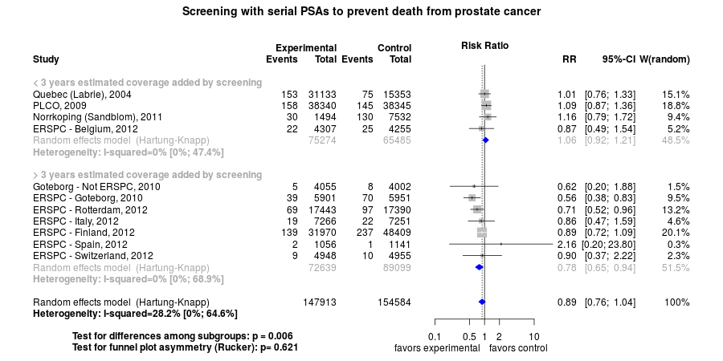

Short URL: openmetaanalysis.github.io/psa
Clinical summary:
This meta-analysis suggests that clinical intervention is effective. Metaregression indicates a correlation between the benefit of screening and years of coverage added by screening with the prostate-specific antigen.
The optimal frequency of screening may be up to 2-4 years as this interval best explains the variation in the results of trials (see analysis).
The number need to invite (NNI) to prevent one death from prostate cancer is 1000 among the subgroup of trials adding more than 3 years of monitoring and 194 in the older cohort within the Göteborg trial.
However, the quality of evidence for benefit from PSA screening for prostate cancer is
Acknowledgement: we acknowledge the essential work by the authors of the prior systematic review(s) listed below.
Methods overview: This repository is an openMetaAnalysis that combines methods of scoping, rapid, and living systematic reviews. This analysis updates one or more previously published review(s)(1).
Newer studies included are listed in the references. Rationale for newer trials excluded may be listed at the end of the references.
A comparison of studies included in this review compared to prior reviews are in the table, reconciliation of studies included with prior meta-analyses. Studies were abstacted into standardized tables of , and results.
Results: Details of the studies included are in the:
- PRISMA documentation
- Reconciliation of studies included with other meta-analyses
- PICO table
- Risk of bias table
- Calculations and plots of years of monitoring added by screening in each trial
- Forest plot(s) (source data)
- Prostate Facts (patient information handout)
The forest plot for the primary outcome is below. Additional forest plots of secondary analyses may be available.

{kind=link}
{kind=link}
The 
References:
Systematic review(s)
Most recent review at time of last revision of this repository
- Canadian Task Force on Preventive Health Care, Bell N, Connor Gorber S, Shane , Joffres M, Singh H, Dickinson J, Shaw E, Dunfield L, Tonelli M. Recommendations on screening for prostate cancer with the prostate-specific antigen test. CMAJ. 2014;186(16):1225-34. doi: 10.1503/cmaj.140703. PMID: 25349003; PMCID: PMC4216256
- Qaseem A, Barry MJ, Denberg TD, Owens DK, Shekelle P; Clinical Guidelines Committee of the American College of Physicians. Screening for prostate cancer: a guidance statement from the Clinical Guidelines Committee of the American College of Physicians. Ann Intern Med. 2013;158(10):761-9. doi: 10.7326/0003-4819-158-10-201305210-00633. PMID: 23567643.
- Ilic D, Neuberger MM, Djulbegovic M, Dahm P. Screening for prostate cancer. Cochrane Database Syst Rev. 2013 Jan 31;1:CD004720. doi: 10.1002/14651858.CD004720.pub3. PMID: 23440794
- Chou R, Croswell JM, Dana T, Bougatsos C, Blazina I, Fu R, Gleitsmann K, Koenig HC, Lam C, Maltz A, Rugge JB, Lin K. Screening for prostate cancer: a review of the evidence for the U.S. Preventive Services Task Force. Ann Intern Med. 2011;155(11):762-71. doi: 10.7326/0003-4819-155-11-201112060-00375. PMID: 21984740.
Randomized controlled trials
New trial(s) not included in the most recent review above
- None
Trials included
- Sandblom G, Varenhorst E, Rosell J, Löfman O, Carlsson P. Randomised prostate cancer screening trial: 20 year follow-up. BMJ. 2011;342:d1539. doi:10.1136/bmj.d1539. PMID: 21454449; PMCID: PMC3069219
- Hugosson J, Carlsson S, Aus G, et al. Mortality results from the Göteborg randomised population-based prostate-cancer screening trial. Lancet Oncol. 2010;11(8):725-32. doi: 10.1016/S1470-2045(10)70146-7. PMID: 20598634; PMCID: PMC4089887
- Schröder FH, Hugosson J, Roobol MJ, et al; ERSPC Investigators. Screening and prostate-cancer mortality in a randomized European study. N Engl J Med. 2009;360(13):1320-8. doi: 10.1056/NEJMoa0810084. PMID: 19297566
- Andriole GL, Crawford ED, Grubb RL 3rd, et al; PLCO Project Team. Mortality results from a randomized prostate-cancer screening trial. N Engl J Med. 2009;360(13):1310-9. doi: 10.1056/NEJMoa0810696. PMID: 19297565; PMCID: PMC2944770
- Labrie F, Candas B, Cusan L, et al. Screening decreases prostate cancer mortality: 11-year follow-up of the 1988 Quebec prospective randomized controlled trial. Prostate. 2004;59(3):311-8. PMID: 15042607
Studies undergoing review
- Ilic D, Djulbegovic M, Jung JH, Hwang EC, Zhou Q, Cleves A, Agoritsas T, Dahm P. Prostate cancer screening with prostate-specific antigen (PSA) test: a systematic review and meta-analysis. BMJ. 2018 Sep 5;362:k3519. doi: 10.1136/bmj.k3519. PMID: 30185521
- 1: Fenton JJ, Weyrich MS, Durbin S, Liu Y, Bang H, Melnikow J. Prostate-Specific Antigen-Based Screening for Prostate Cancer: Evidence Report and Systematic Review for the US Preventive Services Task Force. JAMA. 2018 May 8;319(18):1914-1931. doi: 10.1001/jama.2018.3712. PMID: 29801018.
- Martin RM, Donovan JL, Turner EL, Metcalfe C, Young GJ, Walsh EI, et al; CAP Trial Group. Effect of a Low-Intensity PSA-Based Screening Intervention on Prostate Cancer Mortality: The CAP Randomized Clinical Trial. JAMA. 2018 Mar 6;319(9):883-895. doi: 10.1001/jama.2018.0154. PMID: 29509864.
- Hugosson J, Roobol MJ, Månsson M, Tammela TLJ, Zappa M, Nelen V, et al; ERSPC investigators. A 16-yr Follow-up of the European Randomized study of Screening for Prostate Cancer. Eur Urol. 2019 Feb 26. pii: S0302-2838(19)30150-2. doi: 10.1016/j.eururo.2019.02.009. PMID: 30824296.
Trials excluded - selected list of important trials
- Kjellman A, Akre O, Norming U, Törnblom M, Gustafsson O. 15-year followup of a population based prostate cancer screening study. J Urol. 2009 Apr;181(4):1615-21; discussion 1621. doi: 10.1016/j.juro.2008.11.115. PMID: 19233435
Excluded as intervention included both PSA, rectal examination, and prostate ultrasound. - Lundgren PO, Kjellman A, Norming U, Gustafsson O. Long-term outcome of a single intervention Population based Prostate Cancer Screening Study. J Urol.
2018 Jan 31. pii: S0022-5347(18)30173-3. doi: 10.1016/j.juro.2018.01.080. PMID: 29408619.
This is the long-term follow-up to the Kjellman report.
Funding for this review
- None.
Cited by
This repository is cited by:
- Ilic D, Djulbegovic M, Jung JH, Hwang EC, Zhou Q, Cleves A, Agoritsas T, Dahm P. Prostate cancer screening with prostate-specific antigen (PSA) test: a systematic review and meta-analysis. BMJ. 2018 Sep 5;362:k3519. doi: 10.1136/bmj.k3519. PMID: 30185521
- Rahal AK, Badgett RG, Hoffman RM. Screening Coverage Needed to Reduce Mortality from Prostate Cancer: A Living Systematic Review. PLoS One. 2016 Apr 12;11(4):e0153417. doi: 10.1371/journal.pone.0153417. PMID: 27070904; PMCID: PMC4829241.
- WikiDoc contributors. Prostate Cancer Screening. WikiDoc. June 14, 2015. Available at: http://www.wikidoc.org/index.php/Prostate_cancer_screening. Accessed June 14, 2015.